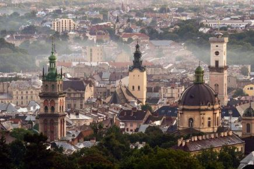

Місто кави, історії та архітектури

Львів — одне з найвідоміших історичних міст України. Його центральна частина відома старовинною архітектурою, площами, вузькими вуличками та великою кількістю кав'ярень.
Чому я обрав Львів
Я обрав Львів через його атмосферу. Мені подобається поєднання історичних будівель, сучасного міського життя та великої кількості цікавих місць для прогулянок.
Цікаві факти
- Історичний центр Львова входить до списку Світової спадщини ЮНЕСКО.
- Львів відомий своєю культурою кави та шоколаду.
- У місті є багато архітектурних пам'яток різних історичних періодів.
Визначні місця
- Площа Ринок
- Львівський оперний театр
- Високий Замок
- Львівська ратуша
Моя оцінка
10/10 — за атмосферу, архітектуру та цікаву історію.